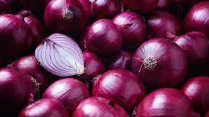

Order organic fruits and vegetables online,the Organic World!
Freshness- the promise of quality
The freshness of the produce being delivered to you is unquestionable, even in the case of standard delivery.
Veggies like banana stem and banana flower, which are used in exotic dishes, are fresh and readily available to buy
online at bigbasket. Vegetables like mushrooms and sprouts, which are prone to quick spoilage are also packed with
utmost care using the best materials. Variety of vegetables such as button mushrooms, raw banana and yellow zucchini
are also available. With the demand for organic produce continuously rising, bigbasket has made them readily
accessible. You can shop for organic bananas online on the site too. All these fruits and vegitables are brought
from verified and reputed vendors, giving no room to worry about quality. Striving to sustain the nutritive benefits
of the vegetables and fruits, bigbasket takes its packaging very seriously and abides by a very strict packing
standard.
Choose from cuts and sprouts, fresh herbs and seasonings
Do away with the hassle of soaking and sprouting grains, or preparing vegetables and fruits for consumption. At
bigbasket, we offer crunchy sprouts and organic produce too! Save the time and effort you spend in cutting and
cleaning by choosing from our basket of pre-prepared fruits and vegetables. Just toss the prepared vegetables into
your wok for a refreshing and healthy meal in a jiffy!
Delivery in Major Cities
We at bigbasket choose our produce with as much care as you do. Carefully sorted, meticulously cleaned and
carefully
packed, fruits and vegetables from our online store reach you the day you order them. bigbasket offers delivery in
Chennai, delivery in Delhi and most other major cities in India.
Tomato
The tomato is the edible berry of the plant Solanum lycopersicum, commonly known as a tomato plant.
Onion
The onion also known as the bulb onion or common onion, is a vegetable that is the most widely cultivated
species of the genus Allium.

Butter Beans
Lima bean (Phaseolus lunatus) also commonly known as the butter bean, sieva bean, double bean, Madagascar
bean, chad bean, or wax bean
Buy Vegetables Online
While fresh vegetables should be a part of your everyday meals, some vegetables are hard to find even in the huge
supermarkets in your area. However, the luxury of online shopping offers customers the comfort of relishing these
veggies by ordering them from the comfort of their home. While beetroot, amlas, green peas, broccoli can easily be
found in the market, bigbasket makes grocery shopping easier for you with their fresh produce delivered in top class
packages right at your doorstep. With their wide delivery network, geographical barriers are easily overcome in more
than 25 major cities, thereby giving you the benefit of fresh fruits and vegetables every time.
History of Vegetables
The 2021 season of mangoes is here, shop for juicy mangoes online from bigbasket. Learn which months are mango
season in India using this infographic.
What if we could show a little love for mangoes, by planting one of its seeds? Learn how to grow mango tree from
seed.
Fruits and vegetables form the base of everybody’s daily food consumption. However, not everyone has access to fresh
and healthy vegetables and fruits due to various reasons. Starting from farming methods that involve toxicants to
storage systems and logistics, many sellers land up with rotten raw foods or foods exposed to chemicals and other
radicals. Bigbasket has now turned the scene around with its online shopping store, where you can have fresh potato,
tomato, carrots, onions and everything else on your grocery list, delivered to your doorstep, even without stepping
out of your house. Apart from your regular local produce, you can also shop for other seasonal produces such as
asparagus, broccoli, drumstick, white onion and more on bigbasket’s online store. Packaging plays a vital role in up
keeping the freshness of your fruits and vegetables. Green leafy vegetables are prone to spoilage easily if not
handled properly. While ordering online in bigbasket, worries about packaging and hygiene can be kept at bay. Be it
your lettuce, cauliflower or any green vegetable, the packaging standard is specific and of high quality. You can
find a whole wide range of vegetables such as red cabbage, drumstick leaves and different exotic ones as well on
bigbasket. Apart from quality, we also believe in making fresh foods available to all and thus, you can find very
nominal pricing while shopping online with us. Comapre the onion price or potato price with anywhere else in the
market, and you will understand what we are talking about.